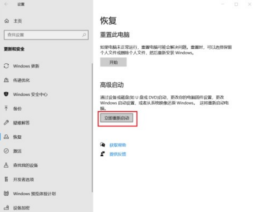
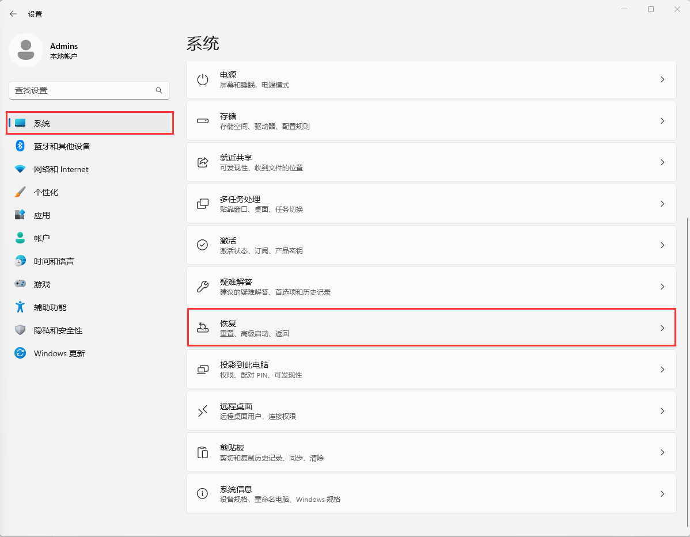
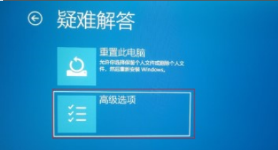
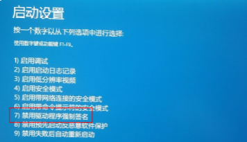
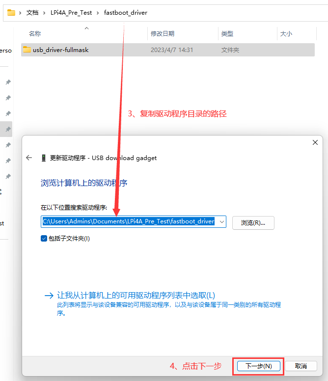

中文
中文烧录镜像
更新历史
| 日期 | 版本 | 作者 | 更新内容 |
|---|---|---|---|
| 2023-05-08 | v1.0 | wonder |
|
准备工作
获取镜像
参见上一章“镜像集合”，选取需要的镜像下载。
以下的烧录方式以 Debian 单屏镜像 LPI4A_20230721.zip，16+128核心板为例。
获取烧录工具
在镜像集合的网盘内可以获得 burn_tool.zip, 解压可得 win/linux/mac 三个系统下的 fastboot 烧录工具。
注意：20231023及之后版本的镜像，添加了大镜像文件烧录支持，需要配合最新版本的 fastboot 使用，最新版本的 fastboot 可以在网盘链接中找到，文件名为burn_tools_support_bigimage.zip。
进入烧录模式
内测版硬件
按住板上的BOOT按键不放，然后插入 USB-C 线缆上电（线缆另一头接 PC ），即可进入 USB 烧录模式。

在 Windows 下使用设备管理器查看，会出现 “USB download gadget” 设备。
在 Linux 下，使用 lsusb 查看设备，会显示以下设备： ID 2345:7654 T-HEAD USB download gadget
正式版硬件
注意检查底板的拨码开关是否为 EMMC 启动模式：

确认无误后即可烧录，接下来的烧录步骤同内测版。
Windows 下驱动安装(禁用驱动签名)
Windows 下烧录时，需要先进入高级启动模式，禁用数字签名。才能正常安装下面的驱动。
禁用数字签名请按照下面的步骤：
Win10
- 找到 WIN10 的设置，点击“设置”：

- 点击最后一个“更新和安全”，然后点击“恢复”：

- 点击“恢复”之后，在右边点击高级启动下面的“重新启动”，此时电脑会重新启动，如果有其他重要 程序在跑，请慎重：

Win11
- 在设置中找到"系统菜单"，然后点击“恢复”。

2. 在右边点击高级启动下面的“重新启动”，此时电脑会重新启动，如果有其他重要 程序在跑，请慎重。

相同部分
- 重启之后会出现几个选项，点击选项“疑难解答”，然后点击“高级”，启动设置，重启。

- 这会重启之后就跳出一个列表，其中有安全模式等选项，也包括这里我们关心的“禁止强制驱动程序签名”，选择“禁用强制驱动程序签名”，对应哪个数字就按那个数字，之后电脑会重新启动。

- 重启之后，驱动就可以成功安装。若有提示点击继续安装即可。 fastboot 驱动安装具体步骤如下：
a. 开发板通过 usb 连接到电脑。
b. 打开设备管理器出现“USB download gadget”设备。


Windows 下驱动安装(手动注入驱动)
烧录流程参考RevyOS文档中所介绍的。这种方法不需要禁用驱动签名，比较方便。
按住板卡上的BOOT键后，将靠近BOOT键的Type-C口接入电脑，板卡会进入刷写模式。
在Windows徽标右键，打开设备管理器，如果在“其他设备”处看到“USB download gadget”，即表明设备已被正确识别。但是未安装驱动程序。
为了打入fastboot驱动，需要下载Google USB驱动（需要代理），下载并解压到某一位置。
- 右键设备管理器中的“USB download gadget”，点击“更新驱动程序”
- 选择“浏览我的电脑以查找驱动程序”
3. 选择“让我从计算机上的可用驱动程序列表中选取”
4. 选中“显示所有设备”，并点击“下一步”

5. 点击“从磁盘安装”
6. 点击“浏览”，选中Google USB驱动下的inf文件，点击确定
7. 选中“Android Bootloader Interface”，点击“下一步”，在弹出对话框中点击“是”，在弹出的Windows安全中心对话框中点击“安装”

8. 成功安装fastboot驱动
完成上述操作后，即可继续下面的步骤。
烧录镜像
进入烧录模式后，可使用 burn_tool.zip 内的 fastboot 进行烧录操作，注意可能需要先赋予 fastboot 可执行权限。
Windows 系统步骤
编辑 burn_tool.zip 文件夹里面的 burn_lpi4a.bat 文件，将对应的镜像路径更改成自己实际使用的镜像及名称。然后双击运行 burn_lpi4a.bat 就能够正常进行烧录了。
注意：
fastboot.exe的路径也需要匹配上，不然会被提示找不到文件。- 如果你采用的是上面第二种方法手动打入的fastboot驱动，如果
burn_lpi4a.bat卡在< waiting for any device >，请检查设备管理器中是否出现了名为USB download gadget的未知设备。若是，按上面的步骤重新打入驱动即可。

Linux 系统步骤
在按住BOOT按键的条件下，系统在reset启动后，会默认进入fastboot模式，
这时侯我们可以通过fastboot下载并启动u-boot镜像的命令，来进入到u-boot的fastboot烧录模式（相比Brom阶段，会有更大下载buffer，速度会更快）
下面的指令会检查并格式化分区，请务必执行，否则后面烧录 rootfs 会很慢。
u-boot-with-spl-lpi4a.bin 和 u-boot-with-spl-lpi4a-16g.bin 为u-boot 固件，具体差异请参考镜像说明。
sudo ./fastboot flash ram ./images/u-boot-with-spl-lpi4a-16g.bin
sudo ./fastboot reboot
sleep 1
分别烧录下面三个镜像：启动引导镜像-uboot，启动分区-boot，操作系统根分区-root
sudo ./fastboot flash uboot ./images/u-boot-with-spl-lpi4a-16g.bin
sudo ./fastboot flash boot ./images/boot_sing.ext4
sudo ./fastboot flash root ./images/rootfs-sing.ext4
boot-sing.ext4 和 boot-dual.ext4 为 boot 分区，具体差异请参考镜像说明。它们主要包含以下内容：
fw_dynamic.bin #opensbi
Image #kernel image
kernel-release #commit id of kernel
light_aon_fpga.bin #fw for E902 aon
light_c906_audio.bin #fw for C906 audio
light-lpi4a.dtb # ddr8G dtb
light-lpi4a-ddr16g.dtb # ddr16G dtb
rootfs-sing.ext4 和 rootfs-mipi.ext4 为根文件系统，默认为 Debian 系统。两者的具体差异请参考镜像说明。
烧录镜像的典型 log 输出如下：

启动机制
brom -> U-Boot SPL -> U-Boot -> OpenSBI -> Kernel
接下来简单介绍一下每个阶段，并展示使用串口工具连接开发板时能够看到的相应日志。
正式版开发板中，系统串口IO新增电平转换IC到3.3V，可以使用普通串口模块连接。
brom
该阶段的典型输出如下：
brom_ver 8
[APP][E] protocol_connect failed, exit.
brom 阶段会从 SoC 的 ROM 中获取核心代码，并寻找下一阶段的 bootloader。
U-Boot SPL
该阶段的典型输出如下：
U-Boot SPL 2020.01-gd6c9182f (Jul 07 2023 - 12:31:51 +0200)
FM[1] lpddr4x dualrank freq=3733 64bit dbi_off=n sdram init
ddr initialized, jump to uboot
image has no header
这里的 U-Boot SPL 中的 SPL 指的是 Secondary Program Loader，其中的 Secondary，也就是第二阶段，是相对于前面的 brom 来说的。
U-Boot SPL 的主要功能是加载真正的 U-Boot 运行，因为一些 SoC 中无法装下一个完整的 U-Boot 镜像，那么就需要 U-Boot SPL 来初始化外部 RAM 和环境，加载真正的 U-Boot 到外部 RAM 中执行。
U-Boot
该阶段的典型输出如下：
U-Boot 2020.01-gd6c9182f (Jul 07 2023 - 12:31:51 +0200)
CPU: rv64imafdcvsu
Model: T-HEAD c910 light
DRAM: 8 GiB
C910 CPU FREQ: 750MHz
AHB2_CPUSYS_HCLK FREQ: 250MHz
AHB3_CPUSYS_PCLK FREQ: 125MHz
PERISYS_AHB_HCLK FREQ: 250MHz
PERISYS_APB_PCLK FREQ: 62MHz
GMAC PLL POSTDIV FREQ: 1000MHZ
DPU0 PLL POSTDIV FREQ: 1188MHZ
DPU1 PLL POSTDIV FREQ: 1188MHZ
MMC: sdhci@ffe7080000: 0, sd@ffe7090000: 1
Loading Environment from MMC... OK
Error reading output register
Warning: cannot get lcd-en GPIO
LCD panel cannot be found : -121
splash screen startup cost 15 ms
In: serial
Out: serial
Err: serial
Net: ethernet@ffe7070000 (eth0) using MAC address - ae:be:2a:50:5e:89
eth0: ethernet@ffe7070000ethernet@ffe7070000:0 is connected to ethernet@ffe7070000.
ethernet@ffe7060000 (eth1) using MAC address - ae:be:2a:50:5e:8a
, eth1: ethernet@ffe7060000
Hit any key to stop autoboot: 0
这个阶段，看到 Hit any key to stop autoboot: 时，在2秒倒计时结束前可以按回车键进入 U-Boot，在这里可以设置各种环境变量，对于常用的环境变量举例设置如下：
设置 MAC 地址：
setenv ethaddr ae:be:2a:50:5e:89
setenv eth1addr ae:be:2a:50:5e:8a
saveenv
将上述命令中的 MAC 地址替换为自己的 MAC 地址即可，注意 eth1addr 的值为 ethaddr 的值加1。
设置内核使用的设备树：
setenv fdt_file light-lpi4a.dtb
saveenv
上述命令中的 light-lpi4a.dtb 替换为存放在 boot.ext4 中想使用的设备树的文件名。
设置完成后也可以使用 printenv 命令检查是否正确，然后输入 boot 命令即可进入内核。
此外，也可以在这里设置启动参数来选择启动方式，比如使用 SD 卡启动。
烧录镜像到 SD 卡中后，将 SD 卡插入开发板，进入到 U-Boot：
env set -f set_bootargs 'setenv bootargs console=ttyS0,115200 root=/dev/mmcblk1 rootfstype=ext4 rootwait rw earlycon clk_ignore_unused loglevel=7 eth=ethaddr rootrwoptions=rw,noatime rootrwreset={factory_reset} init=/lib/systemd/systemd'
env save
上述步骤完成后，输入 reset 命令重启开发板，即可从 SD 卡启动系统。
对于正式版开发板则可以使用底板上的拨码开关来选择启动方式：
OpenSBI
OpenSBI 的 sbi_init.c 文件中的一些初始化打印不会在启动 log 中展示出来，但能够在 Kernel 启动时看到一些关于 OpenSBI 的信息被打印出来：
[ 0.000000] SBI specification v0.3 detected
[ 0.000000] SBI implementation ID=0x1 Version=0x9
[ 0.000000] SBI v0.2 TIME extension detected
[ 0.000000] SBI v0.2 IPI extension detected
[ 0.000000] SBI v0.2 RFENCE extension detected
[ 0.000000] SBI v0.2 HSM extension detected
OpenSBI 有三种 firmware，这里所使用的是 FW_DYNAMIC，它会根据前一个阶段传入的信息加载下一个阶段。OpenSBI 的 fw_dynamic.bin 固件被存放在 boot.ext4 中，这个阶段会引导内核启动。
Kernel
该阶段的典型 log 如下（由于太长，仅截取部分）：
[ 0.000000] Linux version 5.10.113-g387b6863253c-dirty
[ 0.000000] OF: fdt: Ignoring memory range 0x0 - 0x200000
[ 0.000000] earlycon: uart0 at MMIO32 0x000000ffe7014000 (options '115200n8')
[ 0.000000] printk: bootconsole [uart0] enabled
[ 0.000000] efi: UEFI not found.
[ 0.000000] Reserved memory: created CMA memory pool at 0x00000003e4000000, size 320 MiB
[ 0.000000] OF: reserved mem: initialized node linux,cma, compatible id shared-dma-pool
[ 0.000000] Zone ranges:
[ 0.000000] DMA32 [mem 0x0000000000200000-0x00000000ffffffff]
[ 0.000000] Normal [mem 0x0000000100000000-0x00000003ffffffff]
[ 0.000000] Movable zone start for each node
[ 0.000000] Early memory node ranges
[ 0.000000] node 0: [mem 0x0000000000200000-0x000000000fffffff]
[ 0.000000] node 0: [mem 0x0000000010000000-0x00000000166fffff]
[ 0.000000] node 0: [mem 0x0000000016700000-0x0000000016ffffff]
[ 0.000000] node 0: [mem 0x0000000017000000-0x0000000018ffffff]
[ 0.000000] node 0: [mem 0x0000000019000000-0x000000001bffffff]
[ 0.000000] node 0: [mem 0x000000001c000000-0x000000001dffffff]
[ 0.000000] node 0: [mem 0x000000001e000000-0x000000001fffffff]
[ 0.000000] node 0: [mem 0x0000000020000000-0x00000000207fffff]
[ 0.000000] node 0: [mem 0x0000000020800000-0x00000003ffffffff]
[ 0.000000] Initmem setup node 0 [mem 0x0000000000200000-0x00000003ffffffff]
[ 0.000000] software IO TLB: mapped [mem 0x00000000fbfff000-0x00000000fffff000] (64MB)
[ 0.000000] SBI specification v0.3 detected
[ 0.000000] SBI implementation ID=0x1 Version=0x9
[ 0.000000] SBI v0.2 TIME extension detected
[ 0.000000] SBI v0.2 IPI extension detected
[ 0.000000] SBI v0.2 RFENCE extension detected
[ 0.000000] SBI v0.2 HSM extension detected
[ 0.000000] riscv: ISA extensions acdfimsuv
[ 0.000000] riscv: ELF capabilities acdfimv
[ 0.000000] percpu: Embedded 27 pages/cpu s73496 r8192 d28904 u110592
[ 0.000000] Built 1 zonelists, mobility grouping on. Total pages: 4128264
[ 0.000000] Kernel command line: console=ttyS0,115200 root=PARTUUID=80a5a8e9-c744-491a-d
[ 0.000000] Dentry cache hash table entries: 2097152 (order: 12, 16777216 bytes, linear)
[ 0.000000] Inode-cache hash table entries: 1048576 (order: 11, 8388608 bytes, linear)
[ 0.000000] Sorting __ex_table...
[ 0.000000] mem auto-init: stack:off, heap alloc:off, heap free:off
[ 0.000000] Memory: 15887448K/16775168K available (12390K kernel code, 5982K rwdata, 61)
[ 0.000000] SLUB: HWalign=64, Order=0-3, MinObjects=0, CPUs=4, Nodes=1
[ 0.000000] rcu: Preemptible hierarchical RCU implementation.
[ 0.000000] rcu: RCU restricting CPUs from NR_CPUS=8 to nr_cpu_ids=4.
[ 0.000000] Trampoline variant of Tasks RCU enabled.
[ 0.000000] Tracing variant of Tasks RCU enabled.
[ 0.000000] rcu: RCU calculated value of scheduler-enlistment delay is 25 jiffies.
[ 0.000000] rcu: Adjusting geometry for rcu_fanout_leaf=16, nr_cpu_ids=4
[ 0.000000] NR_IRQS: 64, nr_irqs: 64, preallocated irqs: 0
[ 0.000000] riscv-intc: 64 local interrupts mapped
[ 0.000000] plic: interrupt-controller@ffd8000000: mapped 64 interrupts with 4 handlers.
[ 0.000000] random: get_random_bytes called from start_kernel+0x372/0x4d4 with crng_ini0
[ 0.000000] riscv_timer_init_dt: Registering clocksource cpuid [0] hartid [0]
[ 0.000000] clocksource: riscv_clocksource: mask: 0xffffffffffffffff max_cycles: 0x1623s
[ 0.000008] sched_clock: 64 bits at 3000kHz, resolution 333ns, wraps every 439804651109s
[ 0.008693] Console: colour dummy device 80x25
都可以在启动内核后，可以替换设备树 DTB 文件、OpenSBI 固件、内核镜像文件 Image 等文件，它们位于 /boot/ 目录下：
sipeed@lpi4a:~$ ls /boot/
Image light-lpi4a.dtb
System.map-5.10.113-g387b6863253c-dirty light_aon_fpga.bin
config-5.10.113-g387b6863253c-dirty light_c906_audio.bin
fw_dynamic.bin vmlinuz-5.10.113-g387b6863253c-dirty
kernel-commitid
批量烧录
如果你有商业需求，需要批量烧录固件，可以使用 sipeed 提供的 ARM/RV 版 fastboot 制作离线批量烧录器。
如果你需要烧录的数量很大，也可以直接联系 support@sipeed.com，我们提供预烧录镜像服务。